Introduction
Below you can see a screenshot of the single-page website you will create.

- In the <header> or 'hero block' is a full-width background image.
- In the <main> part are five <section> blocks of content. The first is a 'deckhead' with a single-column layout. The remaining four are blocks for each of the four smoothie products. All have a two-column split layout.
- All text on the web page is in the Neucha font from Google Fonts.
Project folders and files
Your first task is to create the folders you need for this project.
- Inside the 📁 portfolio of your ‘main’ 📁 websites folder, create a sub-folder to hold the files for your Smoothies project. Name the new sub-folder as 📁 smoothies (all small letters).
- Inside this new folder, create an 📁 assets sub-folder.
And inside this, create a 📁 CSS sub-folder and an 📁 img sub-folder.

✅ All done. You now have created the folder with sub-folders for your Smoothies web page project.
Project Resources
Your next task is to obtain the various files needed for your Smoothies project.
Web page
Save the following Lunevedy ‘starter’ web page to your 📁 smoothies folder:

Ensure the Save as type: option is set to Web Page, HTML Only (*.htm; *.html).
Stylesheet
Save the following stylesheet file to your 📁 smoothies/assets/css sub-folder:
When you save a stylesheet file, the Save as type: option defaults to Style Sheet (*.css).
Project Text
All the text you need for this web page is in the file below. Only <p> tags have been used for basic formatting.
You do not need to download this file. You can simply copy-and-paste from it.
Project Images
Download the following five images to your 📁 smoothies/assets/img sub-folder.


✅ That's it. You now have all the resources you need for your Smoothies project.
Launching the Lunevedy app and VS Code
Click the link below to open the Lunevedy app in a new tab of your web browser.
Next, start VS Code, and open the two files below.
- smoothies/index.html
- smoothies/assets/css/custom.css


You are now ready to begin building the various ‘blocks’ of your web page.
Creating the hero block layout
You will begin by creating the hero block that is postioned at the top of the web page.
Working with the hero block in Lunevedy
Follow these steps:
- On the home page of the Lunevedy app, choose Hero Block 3 option.
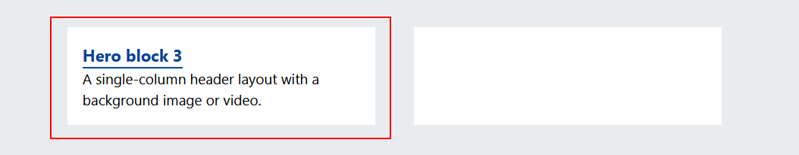
You should see a screen similar to the following.

- On the Layout menu, choose the following options.

- On the Button menu, choose the following option.

- Click the HTML button near the bottom-right of the screen.
You can see that the CSS button is not enabled. That is because you have not updated any colours.
Working with the hero block in VS Code
Switch to VS Code and display the index.html web page.
You can delete the <nav> block at the top of the web page, and the <footer> block and JavaScript <script> tag at the bottom. These are not used in this project.

Select the opening and closing <header> tags as shown below. 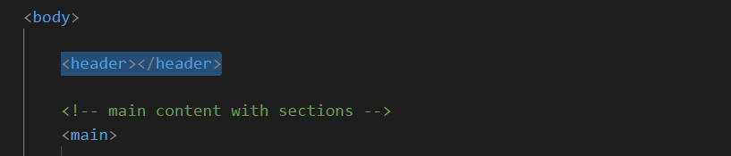
- Paste in the content you copied from the Lunevedy app. Your VS Code screen should now look as shown below.

- Update the hero block with the words from the text.html file and the downloaded hero image.

- Save your index.html and display it in your web browser. It should look as shown below.

- To speed up the loading of the large smoothies-hero-image.jpg file, copy-and-paste the following code just after the "Preload hero image" comment line in the <head>.
<link rel="preload" href="assets/img/smoothies-hero-image.jpg" as="image">
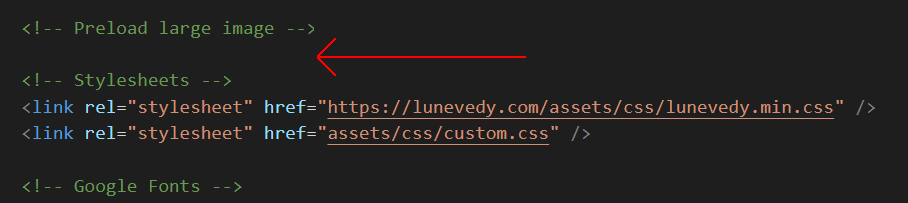 - Also in the <head> of your web page, update the title and description as follows.
- Mary Smith | Portfolio Project | Smooth Smoothies
- Dublin's finest smoothie store. Offering tasty alternatives to sugary and unhealthy snacks for busy, on-the-go, on-trend professionals.

- You will not be using any icons for this project. So you can delete the highlighted code below from the <head> of your web page.

Removing these unused links will help your web page load more quickly.
Creating the deckhead layout
Now it's time to create a deckhead/standfirst section that will be positioned under the hero block.
Working with the deckhead in Lunevedy
Follow these steps:
- On the Home page of the Lunevedy app, click the Single column option.

- On the Section menu, leave the Section Class Name option at section-selector-1 and centre-align the content for both desktop and mobile screens. 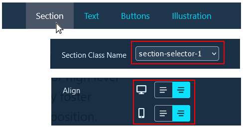
- On the Text menu, select the options below. 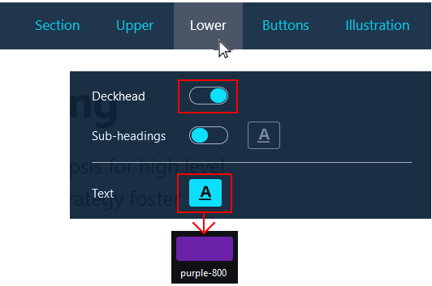
- On the Illustrations menu, remove the illustration. 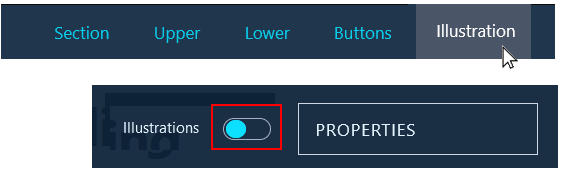
When finished, click the HTML button near the bottom-right of the screen.
Working with the deckhead in VS Code
Follow these steps:
- Switch to VS Code and display the index.html web page. Inside the opening <main> tag pair, select the first <section> block.
 Now paste in your copied content.
Now paste in your copied content. - Delete the h2 sub-heading, and the second and third p paragraphs of sample text. Your VS Code screen should now look as shown below. 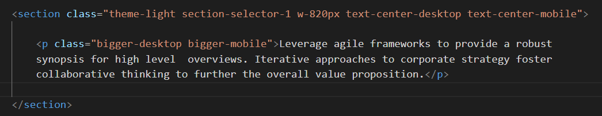
- Update the deckhead with the words from the text.html file.

- Return to the Lunevedy app and click the CSS button at the bottom right.
- In VS Code, display the custom.css stylesheet, and paste in the copied CSS style rule. See below.

- Save your index.html and custom.css files and display the web page in your browser. It should look as shown below.

Creating the Watermelon smoothie layout
Now you will begin creating the four <section> blocks to hold details of the four smoothie products.
Working with the Watermelon smoothie in Lunevedy
Follow these steps:
- On the Home page of the Lunevedy app, click the Two-column split option.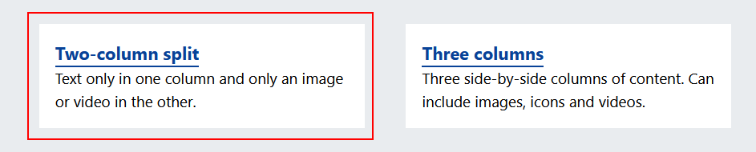
- On the Section menu, choose the following options: 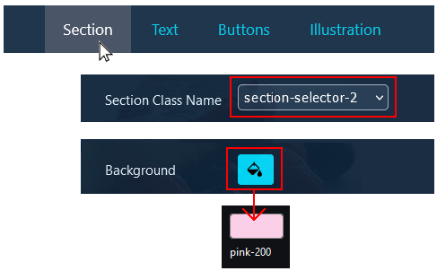
- On the Text menu, choose the following option:

When finished, click the HTML button at the bottom right of the screen.
Working with the Watermelon smoothie in VS Code
Follow these steps:
- Switch to VS Code and display the index.html web page. After the first deckhead <section>, select the next empty <section>.

- Paste in the copied content from Lunevedy.
- Update the text with the words from the text.html file and the downloaded watermelon.png image.

- Return to the Lunevedy app. at the bottom right of the screen, click the CSS button.
- In VS Code, display the custom.css file, and paste in the two CSS style rules.

Save your index.html and custom.css files.
In your browser, the watermelon section should now look as shown below.
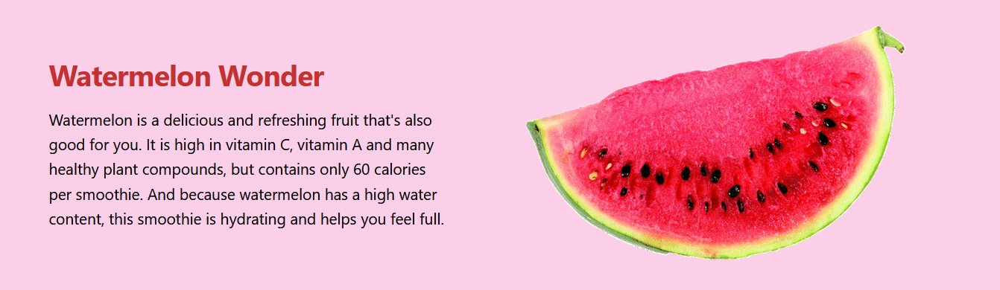Creating the Apple smoothie layout
Let's create the layout for the second smoothie.
Working with the Apple smoothie in Lunevedy
Follow these steps:
- On the Lunevedy screen for the two-column split layout, reload the screen in your web browser to remove all previous settings.
- On the Section menu, choose the following options:

- On the Text menu, choose the following option:

When finished, click the HTML button at the bottom right of the screen.
Working with the Apple smoothie in VS Code
Follow these steps:
- Switch to VS Code and display the index.html web page. Select the next empty <section> tag pair.
- Paste in the copied content from Lunevedy.
- Update the text with the words from the text.html file and the downloaded apple.png image. 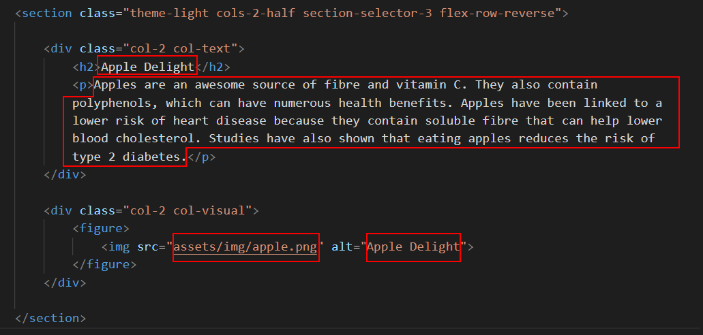
- Return to the Lunevedy app. at the bottom right of the screen, click the CSS button.
- In VS Code, display the custom.css file, and paste in the two CSS style rules.

Save your index.html and custom.css files.
In your browser, the apple section should now look as shown below.

✅ That's two of the four smoothie products complete.
Creating the Blueberry smoothie layout
Let's create the layout for the third smoothie.
Working with the Blueberry smoothie in Lunevedy
Follow these steps:
- On the Lunevedy screen for the two-column split layout, reload the screen in your web browser to remove all previous settings.
- On the Section menu, choose the following options:

- On the Text menu, choose the following option:

When finished, click the HTML button at the bottom right of the screen.
Working with the Blueberry smoothie in VS Code
Follow these steps:
- Switch to VS Code and display the index.html web page. Select the next empty <section> tag pair.
- Paste in the copied content from Lunevedy.
- Update the text with the words from the text.html file and the downloaded blueberry.png image. 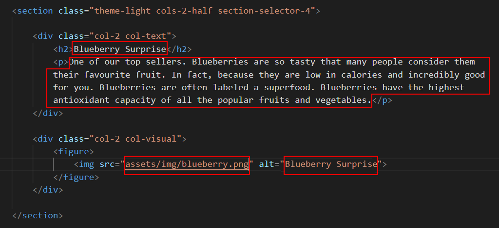
- Return to the Lunevedy app. at the bottom right of the screen, click the CSS button.
- In VS Code, display the custom.css file, and paste in the three CSS style rules.

Save your index.html and custom.css files.
In your browser, the blueberry section should now look as shown below.

Creating the Lemon smoothie layout
Let's create the layout for the fourth and final smoothie.
Working with the Lemon smoothie in Lunevedy
Follow these steps:
- On the Lunevedy screen for the two-column split layout, reload the screen in your web browser to remove all previous settings.
- On the Section menu, choose the following options:

- On the Text menu, choose the following option: 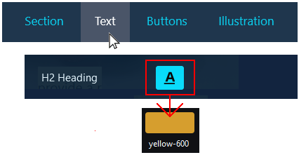
When finished, click the HTML button at the bottom right of the screen.
Working with the Lemon smoothie in VS Code
Follow these steps:
- Switch to VS Code and display the index.html web page. Paste in the copied content under the previous <section> block.
- Update the text with the words from the text.html file and the downloaded lemon.png image. 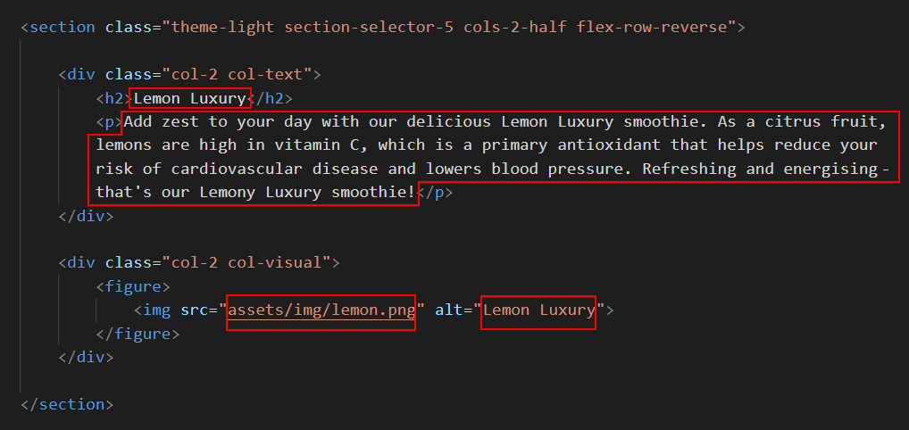
- Return to the Lunevedy app. at the bottom right of the screen, click the CSS button.
- In VS Code, display the custom.css file, and paste in the two CSS style rules.

Save your index.html and custom.css files.
In your browser, the lemon section should now look as shown below.

Finally, remove any empty <section> tags from the index.html file.
✅ You have now completed all four of the product sections.
Adding a Google Font
Your next task is to add a Google font to all the text in your smoothies web page Here are the steps:
- In a new browser tab, choose the Neucha font in Google Fonts.
- At the right of the screen, click Remove all to remove any previously selected fonts.
- Scroll down the screen and click the Select Regular 400 option. (This is the only version available for this font family.)

- From the two boxes of code at the lower-right of the screen, copy the first.
- Switch to the index.html file in VS Code, and paste the font code in the <head> of the web page.

- Display the custom.css file and add the following style at the top of the file.

Save your index.html and custom.css files.
✅ All done!
Uploading your project folder to GitHub
After finishing your project, you are now ready to upload it to your account on GitHub.
- Open a new tab in your web browser and go to GitHub.com. If you are not already signed in to your GitHub account, sign in now.

- On your GitHub home page, click the ‘repo’ that holds your web pages. Its name will look as follows, where username is your chosen username on GitHub.
username.github.io

- On the next GitHub screen displayed, click the portfolio folder.
- With your portfolio folder displayed on GitHub, click Add file button.

- From the dropdown list displayed, choose the option Upload files.

- In File Explorer (Windows 10) or Finder (Apple Mac), drag-and-drop your 📁 smoothies folder to upload it to the portfolio folder within your repository on GitHub. 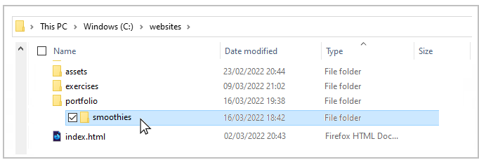
- Scroll down to the bottom of the GitHub screen, and accept or edit the short message (Add files via upload) in the Commit changes box.
- Finally, click the green Commit changes button to upload your files.

Your portfolio project web page is now published on GitHub at a web address similar to the following:
https://username.github.io/portfolio/smoothies/index.html
or simply:
https://username.github.io/portfolio/smoothies
It may take a few minutes for your uploaded files to appear on GitHub.